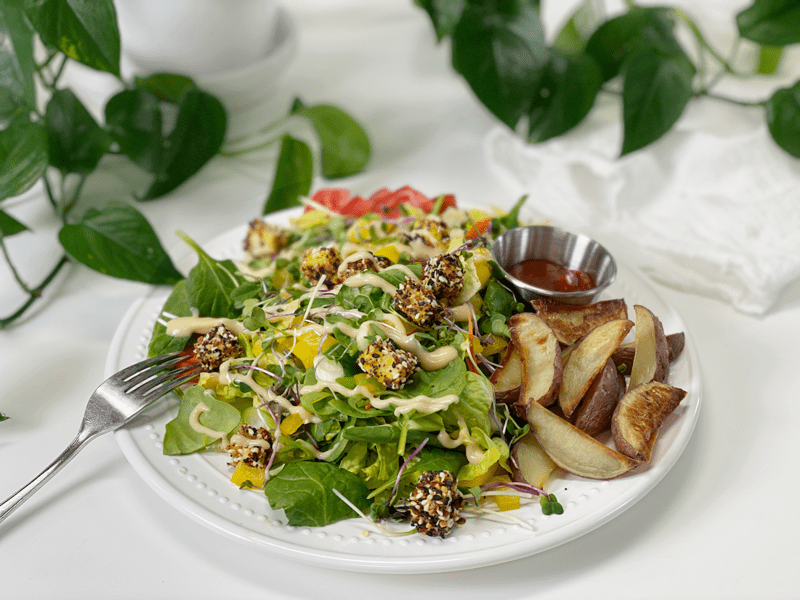

Green Salad, Polenta Croutons, and Potato Wedges | Plates of Inspiration
I try to get a big green salad in me once a day, but with our grocery trips greatly limited (due to COVID-19) so is my supply of fresh produce. As I mentioned in another post…I will never take fresh fruits and veggies for granted again. They have been such an intricate part of my life and culinary career that I never really stopped to appreciate how readily available they have always been.

So, let’s see what a gluten-free, vegan, nut-free, soy-free meal looks like. Green salad based in Romaine lettuce, spinach, microgreens, green onions, and fresh chives, yellow bell pepper, carrots, and my Polenta Everything Bagel Croutons. I drizzled Creamy Dijon Dressing over the top, which really sealed the deal. On the side, I had some red baked potato wedges (I love how creamy they get when baked) dipped in my favorite Ketchup. I hope this plate gives you some inspiration. Sending love and blessings to each and every one of you. amie sue
© AmieSue.com